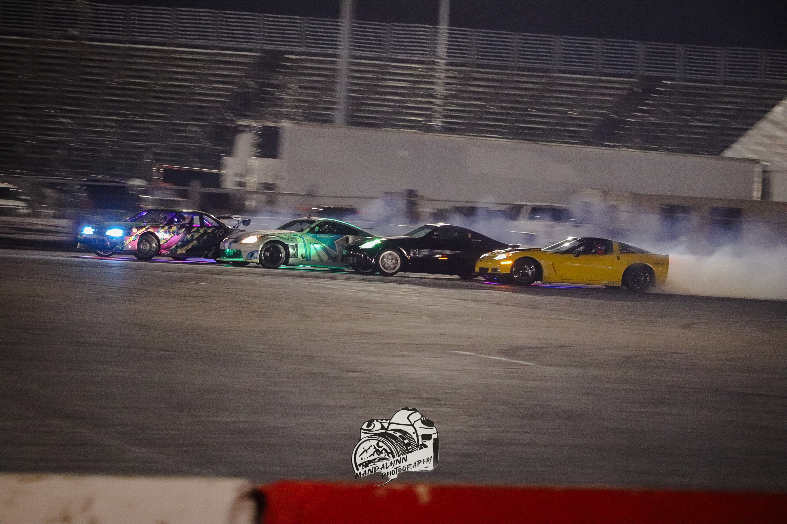
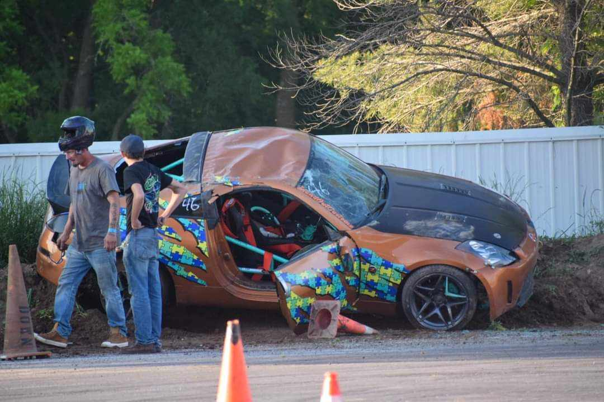

CRUISING THROUGH 2ND & 3RD! FD WALL TAPS
Who’s That Knocking At My Door?
Jun 11, 2024 Written By Drift Enthusiast Magazine
The DRIFTEM crew followed Formula DRIFT across the lower 48 during May in pursuit of capturing fun times and good memories at the Road Atlanta (Road to the Championship) and Orlando Speed World (Scorched) stops along the U.S. PRO drifting circuit.We’re not gonna lie! These events sneak up on everyone like a knock on the door in a great tandem battle. If May also flew by fast for you, and you didn’t catch either of these nail-biting events, you’ll want to catch up on all the door knocking on FD’s livestream. In the meantime, here’s our recap of some of the highlights from both events:
PRO European Domination
So far this season, FD’s podium has been weighted with Europeans. In fact, the final races in Atlanta and Orlando both ended up involving drivers from the same European regions. We had the ‘Norwegian Finals’ in Atlanta, with Fredric Aasbo (@fredredaasbo) and Simen Olsen (@simenolsendrifting) battling for first, followed by the ‘Irish Finals’, with FD Rookie Conor Shanahan (@conorshanahan79) and three-time champ James Deane (@jamesdeane130), duking it out for top honors in Orlando. Aasbo and Shanahan won their respective races, and the win also crowned Shanahan with a perfect event score after also landing in first place during the seeding bracket round.

IN AND OUTS
Goon Monsoon As if the whacky weather in Long Beach wasn’t enough of a seasonal shocker, anyone that showed up before the PROSPEC events in Atlanta now knows what a southern monsoon feels like. Fortunately, it didn’t cause too much track havoc, and it was out as fast as it was in. Just in time to see all the PROSPEC seeding-bracket drivers wrangle each other on semi-dry pavement.License To Shred
The PROSPEC circuit welcomed ten newly licensed rookies from around the world at Round 1 this season. Props to inbound U.S. drivers Adam Heishman (@wall_hugs), Allen Boss (@allenboss480), Brian Wills (@nh_fab), Coty Demster (@cotydemster), Jayce Habich (@ls13coupe), Josh Stuart (@stuartfamdrifting), and Nik Jimenez (@nikxjimenez), along with Irish driver Clarke Hatton (@clarkehatton_477), Lee Yearwood (@leebird_rb) from Trinidad & Tobago, and Luis Lanz (@luislanz8) from Venezuela.
Power Returns To The Alley
Extended damage from an unfortunate wall encounter Mike Power (@mikepowerdrift) had in Long Beach prevented him from competing in Atlanta, but he returned to the paddock in Florida flashing his shades, big smile, and a ‘ready-to-win’ spirit (read more on Power in his recent Skid Pod episode).
Skidding Back In
After vehicle-related issues forced Matt Field (@mattfield777) and Ryan Litteral (@ryanlitteral) to sit Long Beach out, both drivers were happy to be back at the Atlanta start line. Field’s luck held on a little longer than Litteral’s, but his final win in Atlanta also led to an appeal by Adam LZ (@adam_lz). To learn how it all went down, tune into a recent YouTube broadcast from FD president and co-founder Ryan Sage (@ryanjsage), where he gives the lowdown on the latest appeals, and several FD rule changes.
No Flops
Despite some fun banter by the announcers in Atlanta, giving fans speculation on whether Vaughn Gittin Jr. (@vaughngittinjr) might deliberately flop during his ‘Dueling RTR’ battle with teammate James Deane (@jamesdeane130), the former FD champ did not disappoint and provided fans a few more signature ‘Funhaver’ runs to remember.
No Swaps
Sooo, Adam LZ (@adam_lz) didn’t go to the Driftmasters Grand Prix (DMEC) event, and instead, competed in FD Atlanta this year. Conor Shanahan (@conorshanahan79) missed FD Atlanta to compete across the pond in DMEC. Considering Conor didn’t qualify and LZ was less than satisfied with his Top 32 battle in Atlanta, we can’t help but wonder if things might have gone down differently had the two changed places.
Just Kidding
Unfortunately, it seemed like swaps were all Odi Bakchis’ (@odidrift) team did during the month of May. They had to replace his engine the first time following his Atlanta fire run. Then, that engine failed, and was swapped again just before Orlando. Yikes! We’re hoping this one keeps on ticking and doesn’t explode, Odi.